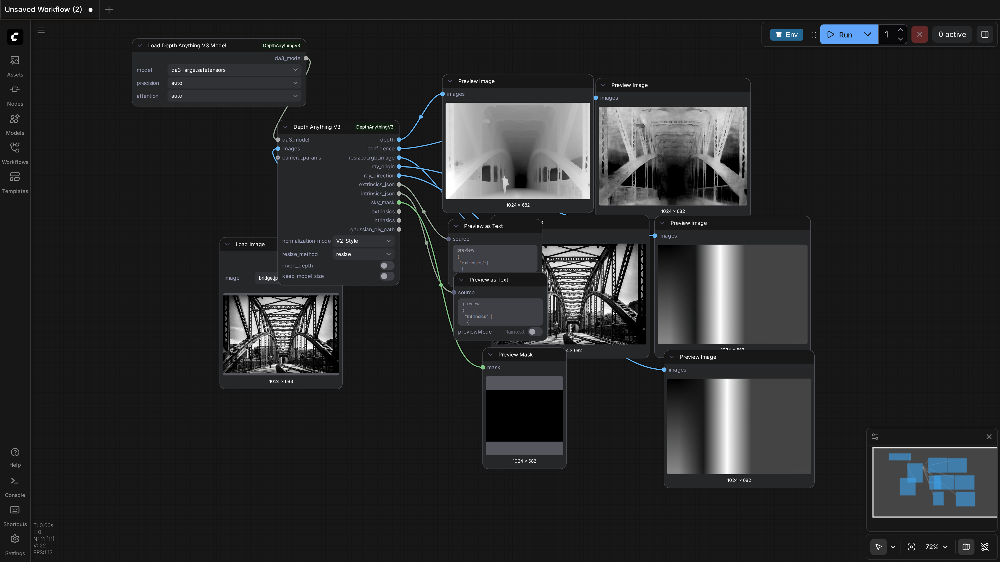
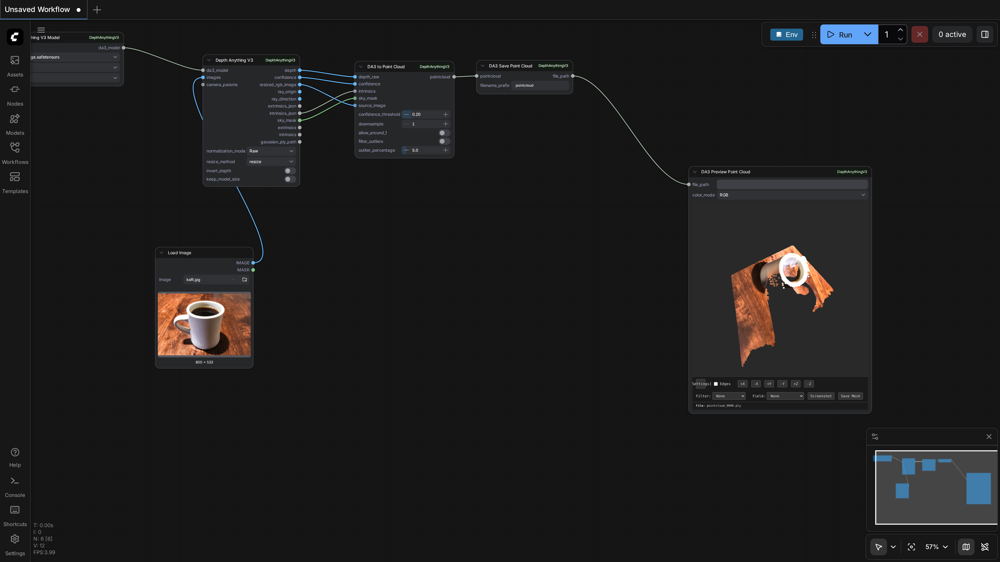
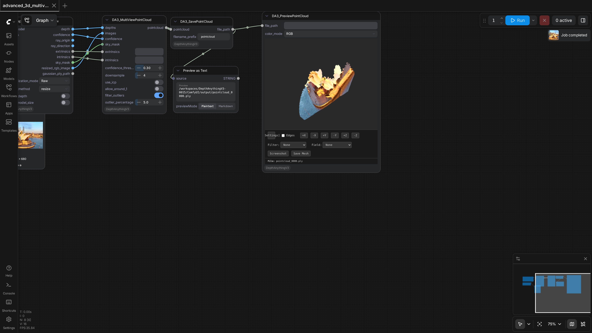
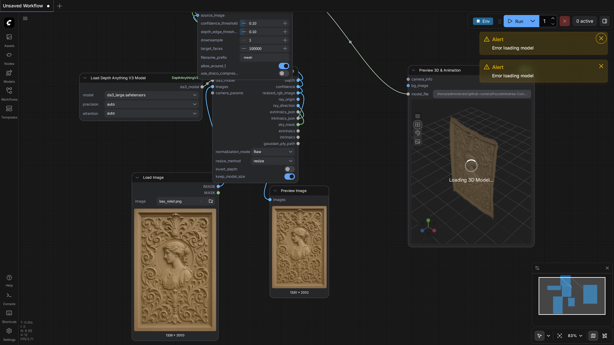
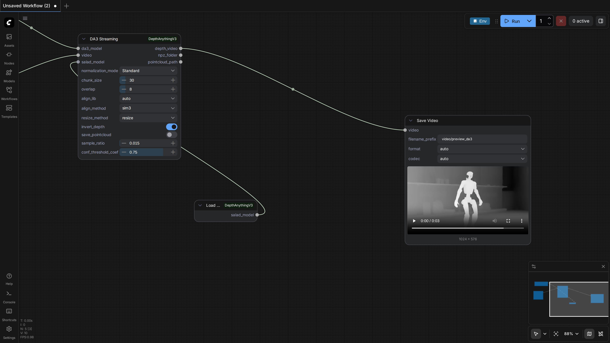
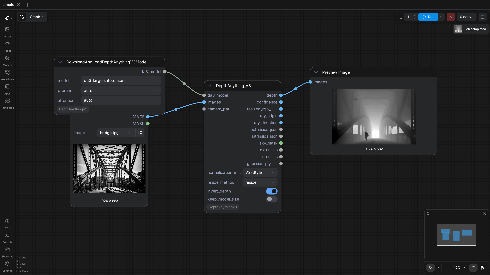
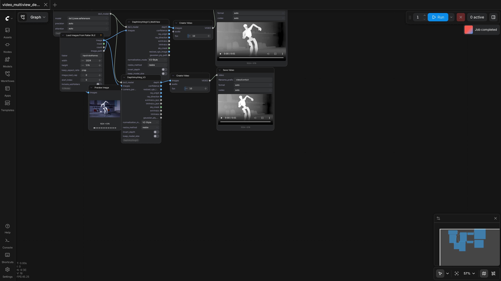

ComfyUI-DepthAnythingV3
Test Results
2026-02-23 01:50 UTC
Linux-6.6.87.2-microsoft-standard-WSL2-x86_64-with-glibc2.39
Intel Xeon E3-12xx v2 (Ivy Bridge, IBRS)
NVIDIA RTX A4000
100.0%
7 passed
7/7 tests
Workflows
Grid
List

advanced
pass
754.94s

advanced_3d
pass
198.99s

advanced_3d_multiview
pass
197.49s

bas_relief
pass
498.59s

da3_streaming
pass
1129.62s

simple
pass
146.86s

video_multiview_depth
pass
398.00s
Downloaded Models
5 files · 2.4 GB
models/depthanything3/
2.0 GB
da3_large.safetensors
1.5 GB
da3_base.safetensors
516.4 MB
.cache/huggingface/download/model.safetensors.metadata
122.0 B
.cache/huggingface/.gitignore
1.0 B
models/salad/
335.7 MB
dino_salad.ckpt
335.7 MB
×
0.0s / 0.0s
Resource Usage
RAM (GB)
VRAM (GB)